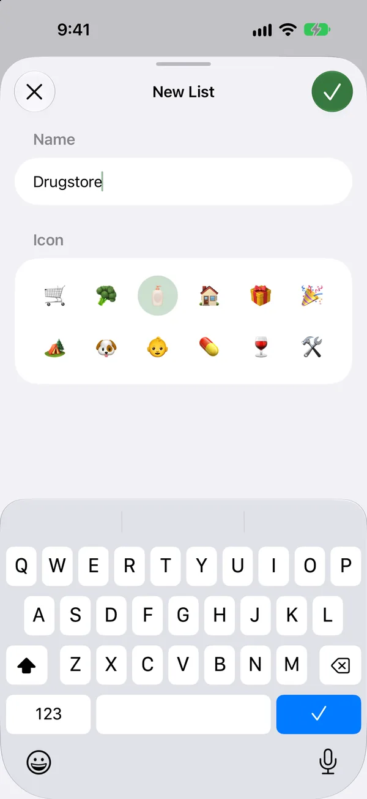

How to have more than one shopping list
-
Step 1 Tap the list name
At the top of the List tab, tap the list name (for example Groceries ˅). A menu with your lists opens.

-
Step 2 Create a new list
Tap New List, enter a Name (for example Drugstore), pick an Icon and confirm with the green ✓.

-
Step 3 Switch and manage lists
Tap the name again to switch to another list. In Manage Lists you can rename, reorder or delete them.
Frequently asked questions
Can my family see my lists?
Yes, if you share a household. Household members see all lists and changes straight away.
Can I delete every list?
Yes, except the last one – at least one list has to stay.
More questions are answered on the Support page.